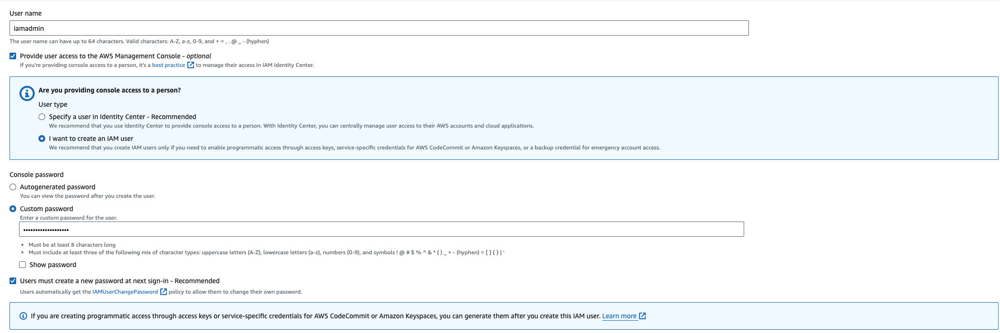

Handl3r
And in this moment, i swear we are infinite
AWS Account and AWS Organization
What inside of this post?
- Explain about AWS Account and setup a account with MFA setup.
- Explain about AWS Organization and setup an Organization with a general account and a prod and fly(development) account. It will be like a real AWS Organization in a company.
- Explain about SCP and make an example demonstrates about it. Understand how an administrator managements permission of each AWS account in in a company.
AWS Account
- AWS Account is not user
- AWS Account is a container for aws resources
- AWS Account need unique email, account name, credit card
- AWS Account have a account root user
- AWS account root user have all permissions in AWS account
MFA
Why need MFA?
- Username and password. If it’s leaked, anyone can login to your account
- That why we need more
factors. It’s different pieces of evidence which prove identity.factorappear in some term like: single-factor authentication, multi-factor authentication- Knowledge: one type of factor: something you know. Username and password is example of this factor type.
- Possession: Something you have. Example is: bank card, MFA device. For example, in multi-factor authentication we need username and password and also a code from MFA device.
- Inherent: Something you are: fingerprint, face, voice,etc
- Location: a location, can be physically or network
- More factors: something else
- Overall more factors means more security and harder to fake
Setup MFA
Setup MFA Follow:

- When you login to you account by username and password, AWS will generate a secret key and also get some additional information
- AWS generates a QR code from these information.
- User MFA authentication application to scan this QR code. It wil extract information from the QR code. and have a algorithm to generate a onetime code based on the received information.
Setup AWS user
After create root user and setup MFA, and all the configuration, you need to setup user to use instead of using root account for some reasons:
- Can not restrict permissions of root users: include close account and manage subscriptions
- You need to create users for multiple users access to your account
- Anyway, it’s best practice that AWS suggested
Now, let’s create a admin user and use it instead of using root user:
-
Fill username and password

-
Select policy AdministratorAccess for user

-
Review and create user
Allow iamadmin access to billing and cost information by configuring on Account->IAM user and role access to Billing information->Activate IAM Access
And then setup MFA for your new iamadmin user.
AWS Organization
AWS Organization is a container of AWS accounts. For example in a company, they can setup an AWS account as the administrator of all child accounts. In this section, we will create a organization with following structure:
Create new AWS Organization
Create dev and prod accounts inside organization
In AWS Organizations service page, click Add an AWS Account and fill all the information.
Organization’s name should have substring like prod or dev for easy to recognize.
For me, i create leonbuiaccountfly for development and leonbuiaccountprod for production, and leonbui_account as the management account.
Create Organization Unit
In the Root of Organization, we can create Organization Unit.
Select the Root and create two OU: DEV, PROD
After that, you can select leonbuiaccountfly and leonbuiaccountprod and choose Move to move the the corresponding OU.
After that you can see latest result like this following image:
You can also setup for Switch Role on AWS Console. Just click to Switch Role and setup for all new account in the organization.
Service Control Policies
- SCPs are account permissions boundaries. It define what an account(which attached with a SCP) can and can not do
- SCPs don’t affect users or roles in the management account. They affect only the member accounts in your organization.
- Management account can not be effected by SCPs
Create a SCP
First, you need to enable SCP. Click Policies->Service Control Polices and enable it.
After that, create a new SCP name AllowAllExceptS3. It’s mean: can do anything except s3.
AllowAllExceptS3:
{
"Version": "2012-10-17",
"Statement": [
{
"Effect": "Allow",
"Action": "*",
"Resource": "*"
},
{
"Effect": "Deny",
"Action": "s3:*",
"Resource": "*"
}
]
}
So after create it, new new SCP will appear in the list. But it will do not make any effect until you attach it to an account or OU.
Attach SCP to AWS Account and OU
Check permission before attaching SCP
As created SCP above, we will restrict s3 permissions. So we create a s3 and submit a file to it to confirm the permission before attaching SCP to DEV OU.
You can see that I created a bucket and upload an image to this bucket. Also have full permission with s3 services and resources inside.
Attach SCP and check permission
Select Dev OU and attach SCP above to it. Also remove FullAccess permission of this OU.
Then we switch role to Dev and access s3 to check the permissions and you can see a alert like You don't have permissions to list buckets in the list buckets screen.
You can also detach SCP from Dev OU and re-check the effective permissions in Fly Account of Dev OU.
Note that policies attached to the root or to OUs can be inherited by child OUs and accounts.
Bonus topic
STS: When having a action need to Assume Role, the where STS is working. An example of STS can be found in following follow: